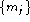

The human ear resolves frequencies non-linearly across the audio spectrum and empirical evidence suggests that designing a front-end to operate in a similar non-linear manner improves recognition performance. A popular alternative to linear prediction based analysis is therefore filterbank analysis since this provides a much more straightforward route to obtaining the desired non-linear frequency resolution. However, filterbank amplitudes are highly correlated and hence, the use of a cepstral transformation in this case is virtually mandatory if the data is to be used in a HMM based recogniser with diagonal covariances.
HTK provides a simple Fourier transform based filterbank designed to give approximately equal resolution on a mel-scale. Fig. 5.3 illustrates the general form of this filterbank. As can be seen, the filters used are triangular and they are equally spaced along the mel-scale which is defined by
To implement this filterbank, the window of speech data is transformed using a Fourier transform and the magnitude is taken. The magnitude coefficients are then binned by correlating them with each triangular filter. Here binning means that each FFT magnitude coefficient is multiplied by the corresponding filter gain and the results accumulated. Thus, each bin holds a weighted sum representing the spectral magnitude in that filterbank channel. As an alternative, the Boolean configuration parameter USEPOWER can be set true to use the power rather than the magnitude of the Fourier transform in the binning process.
Normally the triangular filters are spread over the whole frequency range from zero upto the Nyquist frequency. However, band-limiting is often useful to reject unwanted frequencies or avoid allocating filters to frequency regions in which there is no useful signal energy. For filterbank analysis only, lower and upper frequency cut-offs can be set using the configuration parameters LOPASS and HIPASS . For example,
LOPASS = 300
HIPASS = 3400
might be used for processing telephone speech. When low and high pass cut-offs
are set in this way, the specified number of filterbank channels are distributed
equally on the mel-scale across the resulting pass-band such that the lower cut-off
of the first filter is at LOPASS and the upper cut-off of the last
filter is at HIPASS.
If mel-scale filterbank parameters are required directly, then the target kind should be set to MELSPEC . Alternatively, log filterbank parameters can be generated by setting the target kind to FBANK. Most often, however, cepstral parameters are required and these are indicated by setting the target kind to MFCC standing for Mel-Frequency Cepstral Coefficients (MFCCs). These are calculated from the log filterbank amplitudes  using the Discrete Cosine Transform
where N is the number of filterbank channels set by the configuration parameter NUMCHANS . The required number of cepstral coefficients is set by NUMCEPS as in the linear prediction case. Liftering can also be applied to MFCCs using the CEPLIFTER configuration parameter (see equation 5.12).
MFCCs are the parameterisation of choice for many speech recognition applications. They give good discrimination and lend themselves to a number of manipulations. In particular, the effect of inserting a transmission channel on the input speech is to multiply the speech spectrum by the channel tranfer function. In the log cepstral domain, this multiplication becomes a simple addition which can be removed by subtracting the cepstral mean from all input vectors. In practice, of course, the mean has to be estimated over a limited amount of speech data so the subtraction will not be perfect. Nevertheless, this simple technique is very effective in practice where it compensates for long-term spectral effects such as those caused by different microphones and audio channels. To perform this so-called Cepstral Mean Normalisation in HTK it is only necessary to add the _Z qualifier to the target parameter kind. The mean is estimated by computing the average of each cepstral parameter across each input speech file. Since this cannot be done with live audio, cepstral mean compensation is not supported for this case.